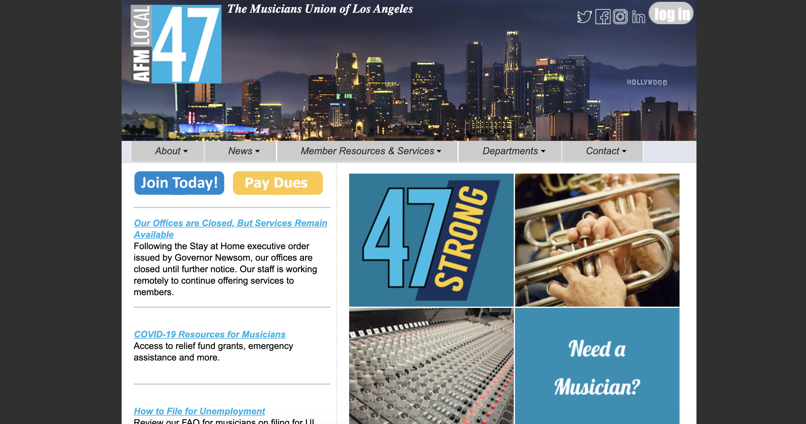
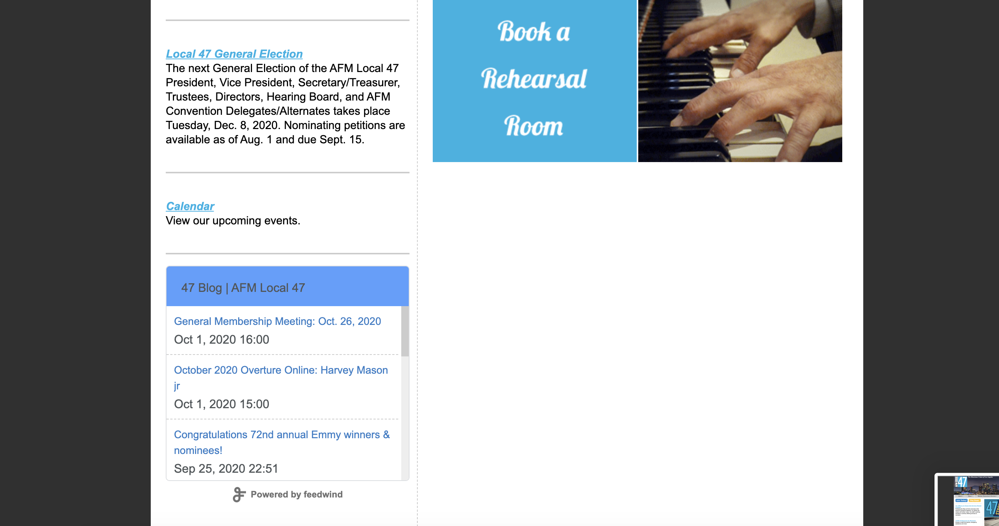
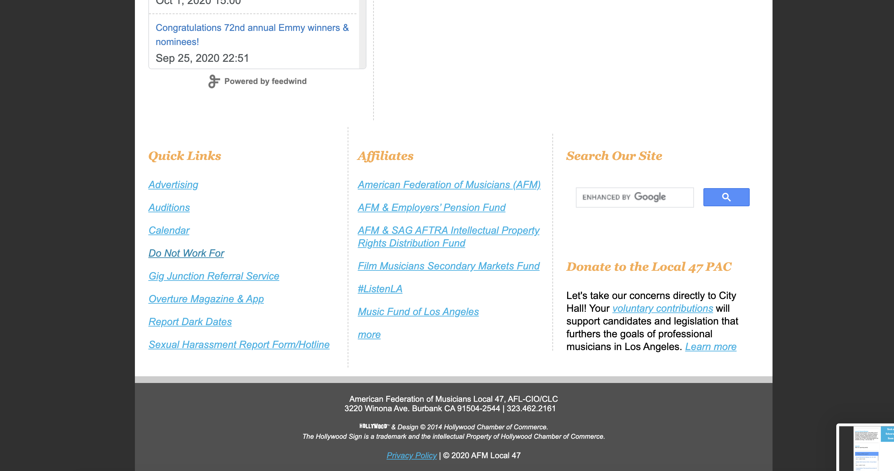

In my search for websites with poor design, I came across a website for a musicians union in Los Angeles. The first thought in my head was "I can't figure out the name of this organization." The next was "I don't really know what I should be clicking." And the third was "This website looks like it might download a virus to my computer." No offense to the original designers.
  The original site can be accessed here.
In analyzing the design of an interface, we fall back into three main categories: usability, learnability, and memorability. Additionally, we want to look at the accessibility of this website.
The website has a consistent color theme and responsive content, suggesting that some thought was certainly put into the aesthetic appearance of the website. However, it is not enough from a functional standpoint. Visitors to this website will be bombarded with a million links, with none looking tempting enough to click and all of the units together resembling more of a spam-type website than an organization. The navigation and interactions at some part of this website are very odd. Additionally, there is very minimal effort put into accessibility, with color contrast being a key issue, as well as important buttons being made from images and not having alt text. Overall, it is a decent website that I wouldn’t hate using if I was a member of the musicians’ union, but does not draw new visitors in and is not very engaging even for returning users. The design of the website is very plain and flat, and in my redesign I want to aim to make this website a lot cleaner, more accessible, and more interactive-feeling.
To create my markups, I used Balsamiq to layout all of my elements and get an idea of how I wanted things to be placed on the website. The idea with this layout is that spacing allows for the existence of hierarchy and easier navigation on the website.
The biggest challenge in responsive redesign is having to think about how my layouts will work for different devices. Across screen sizes, the appearance of my site may vary as a result of ratioed sizing and limited space. As a result, I had to put in a lot of time considering how the size of the viewing screen would impact the way this layout would work.
The most fundamental changes, from what was planned in the lo-fi stage, would occur at two main places: the navigation bar and the quick navigation buttons. Navigation bars will be hard to tap on and see on a smaller screen, so at a mobile screen size, I want to switch over from a navigation bar that stretches across the width of the screen into a hamburger menu that can be tapped on by a user to reveal the menu. As for the quick navigation, the biggest thing here will be to figure out how to wrap my buttons in a logical way.
The color scheme displayed on these screens comes partly from the main blue on the logo of the site, as well as the warm-tone of the "Pay Dues" button on the original website. I chose a more rounded font, rounded button style, and these light colors to add an element of brightness to the site, making it more engaging for users.
In order to make the website appear less flat than before, I decided to have shadows and hover actions on each button as a signal to the user to click. Keeping the city theme of the website in mind, I also went with a header photo of LA but in the daytime to keep with the theme of the new colors and to keep a theme of modernity.
In creating hi-fi prototypes, I recognized that wrapping each section in a div container was the best way to go about keeping a clean, sleek design and create an obvious hierarchy. I decided that I would make use of grid layouts in my design, because they will keep the layout of my buttons very organized. While these prototypes depict only one part of my design, the major ideas were all laid out in front of me, ready to be coded.
Placeholder search interaction on page.
Body text: This font is called 'Encode Sans Expanded'. It is a Google font I downloaded and imported for this project. Sticking to the theme of making the site less flat, I wanted a rounded font to complement the rounded elements onscreen.
Other "buttons" were images that filtered on hover, navigating off-site or to home.
Website can be accessed here.